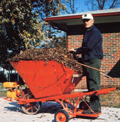

Here's a man who combines neighborhood beautification and garden improvement, using...
"I'll rake your yard, and you can pay me with the load of leaves I collect." That's what Erwin Joergens of Okawville, Illinois tells his neighbors . . . and he means it, too.
This retired auto mechanic and locally renowned gardener is able to make that generous offer because he can count on the help of his self-propelled wheelbarrow, a vehicle that enables him to motor up and down the street in order to collect leaves from nearby yards . . . and then to transport the autumn harvest to his large vegetable garden for use as mulch. In fact, Mr. Joergens' hauler is even equipped with a platform that allows him to ride along while he steers the "pickup".
Erwin's motorized mulch-mover (which, he says, took him only about 15 hours to build) incorporates a 3-1/4horsepower Clinton engine, an old rototiller gear case, and a T-shaped handgrip for steering .. . plus side levers that allow him to control the engine and gearbox via chains. And the wheelbarrow cost Mr. Joergens only $30 or so, because most of the parts were discards.
Since he's been using his new machine, Erwin has found not only that his garden is flourishing thanks to all that good mulch he's able to collect-but also that his relationship with folks in his community is better than ever. After all, who'd pass up an opportunity to have the lawn raked for free?
|
 |
|
|